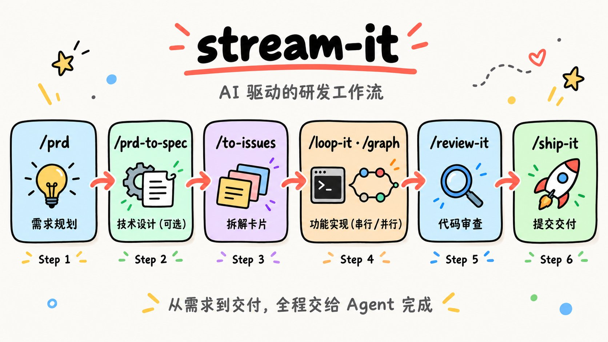
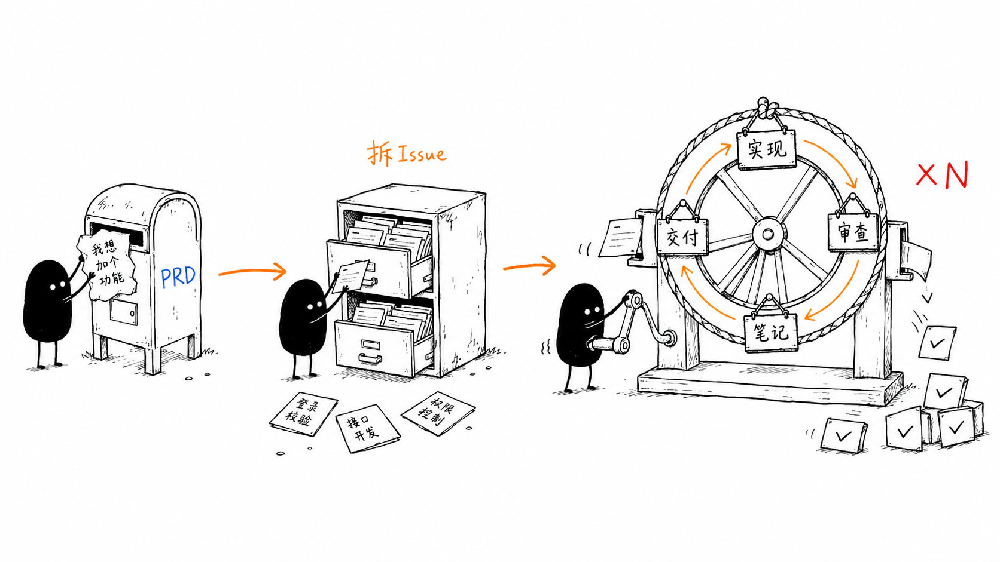

AI-driven development workflow — from PRD to shipped code
Usage Guide — 六步闭环研发工作流：规划、设计、拆解、实现、审查、交付。
stream-it 是一套研发工作流技能集：26 个技能，把「想法 → 交付」拆成标准步骤——需求、设计、拆解、实现、审查、交付——每一步由一个技能负责。
它让 AI Agent 能够像一个有经验的工程师一样——从理解需求、拆解任务、编写代码、审查质量，到最终提交合入——全流程自主完成。你只需描述功能想法，剩下的交给工作流。
/ask-flow——说清你现在的处境（一个还没成形的想法、一堆进来的 issue、一段调不通的代码、一次漫长的实现），它只回答「下一步敲什么」以及那一步里哪些决定要你来拍，不替你动手。
技能路由（入口）：只给下一步，不执行
需求文档生成
PRD 转技术设计方案
拆解 PRD/SPEC 为垂直切片 Issue
把外面进来的原始 issue 分流成可执行卡片
DSH 的持久目标命令
双轴代码审查收尾
提交 → PR → 合入 → 关闭
交互式审阅新生成的（AI）改动
迭代式去 AI 味改写
UML 与架构图生成器
专家级代码重构
Go 代码现代化改造
实现笔记记录
docs/issue#NNNN.md交付前走查
逆向生成项目规格文档
架构坏味道检测
自动化 Issue 批量实现循环
.loop-state.json），crash 不丢进度PRD 转设计文档（Go 提案风格）
任务图并发实现（DAG + 超步）
单个单元的内联闭环
红 → 绿循环的参考
难 bug 的排障循环
解进行中的 merge / rebase 冲突
--abort固定风格的 HTML 设计文档
ListenHub 文本转语音（TTS）
为文章配 itshover 风格图标
itshover.com）：请求限定在该域名，返回的标记按白名单重建后才内联，异常即报错不输出flow（流水线本身，10 个）、practice（中途因为出事了或要保证质量伸手拿的，7 个）、meta（描述这套技能集自身的路由，1 个）、bonus（产出非代码工件，8 个）。
两条安装路径，二选一即可。
# 安装全部 skills 到 ~/.agents/skills
npx skills add 9Ashwin/stream-it
# 之后按来源更新
npx skills update -g~/.agents/skills，这条装法不必动任何 profile 依赖。npx skills 递归扫描，安装时把 skills/<桶>/<技能> 拍平成 ~/.agents/skills/<技能>——技能根只扫一层，所以必须拍平。.claude-plugin/marketplace.json 里「每桶一个 plugin」的声明；没有归属声明的技能会掉进兜底的 Other 组。手动拷贝时要自己完成拍平这一步——不要连桶一起拷：
# 拍平到 ~/.agents/skills/<技能>
cp -R <stream-it>/skills/flow/graph ~/.agents/skills/graph# 安装到 web profile
dsh plugin --profile web add -w github:9Ashwin/stream-it
# 生产环境建议锁定到某个 commit
dsh plugin --profile web add -w github:9Ashwin/stream-it#<sha>
# 验证安装
dsh --profile web --dump-config | grep -A3 stream-it-w 不能省略：DSH 把 profile 当作 pnpm workspace 根，pnpm 9 缺少该标志时会报 ERR_PNPM_ADDING_TO_ROOT。dsh.bundle 声明会让 dsh 把它追加进 profile 的 bundles 层，技能由包内自带的 provider 提供，不依赖 ~/.agents/skills 是否在技能根里。allowBuilds 授权。github:9Ashwin/stream-it#<sha>。dsh --profile web --dump-config | grep -A3 stream-it，应看到 # == stream-it-skills 层。dsh plugin --profile demo add -w /path/to/stream-it。~/.agents/skills 本来就在它的技能根里，所以「只想要技能」时方式一就够了——两个来源的同名技能按近层优先去重，目录副本会赢过插件包副本，两条都装也不会重复出现，只是在 Web 面上 bundle 赢不了目录。方式二的增量价值是随包携带 preset：一个 preset 可以同时决定这个 agent 挂哪些技能、以及它的子代理带不带技能目录（toolFilter）与 persona，把「这套流程怎么跑」变成部署层的一等配置。反过来，若你用没挂 preset 的面（某些 minimal profile），方式二才是技能可见的来源。
| 工具 | 用途 | 安装 |
|---|---|---|
npx | npm package runner（推荐方式） | Node.js 自带 |
gh | GitHub CLI (Issue/PR 操作) | brew install gh && gh auth login |
dsh | DeepSeek Harness CLI（仅方式二需要） | 参见 DSH 官方安装说明 |
/ask-flow、/prd、/prd-to-spec、/to-issues、/triage、/implement、/test-first、/loop-it、/graph、/diagnose、/conflict、/review-it、/ship-it、/refactor、/modern-go、/note-it、/walkthrough、/code-to-spec、/humanize-it、/insight-diagram、/smell、/to-design、/design-it、/listenhub-tts、/article-icons、/understand 即可直接调用对应技能。其中 /goal 是 DSH 的命令（不是 skill）：模型侧是 create_goal / update_goal，但只在顶层直接的人类回合执行。
/ask-flow、/insight-diagram、/article-icons、/humanize-it、/listenhub-tts）标记为不进模型目录，省下每个会话与每个子代理都要付的那份固定成本。这 5 个技能还各带一份 agents/openai.yaml（policy.allow_implicit_invocation: false）。
从需求到交付的闭环工作流：

/prd → /prd-to-spec （可选） → /to-issues ─┬─→ /implement （单单元：内联实现 → 门禁自证 → /review-it → /ship-it）
├─→ /loop-it （串行：一次一个 Issue，带检查点恢复）
└─→ /graph （并行：按波次 fan-out，每节点独立 git worktree，波次间 fan-in 屏障）
节点：内联实现 → 门禁自证 → commit；波末：集成 → /review-it → /walkthrough → /ship-it| 步骤 | 命令 | 输入 | 输出 |
|---|---|---|---|
| 1. 规划 | /prd |
功能描述 / 产品想法 | PRD 文档（交给 /to-issues 拆解） |
| 1.5 设计 | /prd-to-spec |
PRD 文档 | 技术 SPEC（可选） |
| 1.6 拆解 | /to-issues |
PRD / SPEC 文档 | Issue 卡片 |
| 2. 实现 | /implement / /loop-it / /graph |
一个或多个 Issue 卡片 | 可运行的代码实现 |
| 2.5 笔记 | /note-it |
已实现并审查的变更 | docs/issue#NNNN.md 实现笔记（可选） |
| 3. 审查 | /review-it |
代码变更 (dirty / branch) | 通过审查的干净代码 |
| 3.5 走查 | /walkthrough |
已评审的变更 | tasks/walkthrough-<feature>.md 走查文档（可选） |
| 4. 交付 | /ship-it |
已审查的代码 | 已合入的 PR + 已关闭的 Issue |
/implement，有 bug / 偶发 flake / 性能回归先 /diagnose，外面进来的原始 issue 先 /triage，正在解 merge / rebase 冲突用 /conflict。选不准就敲 /ask-flow。
/prd 将一个模糊的功能想法转化为结构化的产品需求文档（PRD）：先把歧义问清楚，再把需求写成可验证的验收条件。它只产出 PRD，不拆 Issue——拆解交给 /to-issues。
# 直接输入
/prd 给我们的任务管理系统加一个优先级功能
# 或使用触发词
写PRD：用户注册功能，支持邮箱和手机号
需求分析：为 API 增加限流能力tasks/prd-[feature-name].md/prd-to-spec（可选）与 /to-issues# 保存 PRD 后给出的下一步
✅ PRD saved to tasks/prd-priority-system.md
/prd-to-spec （可选：复杂功能才需要技术方案）
/to-issues （把 PRD 拆成有阻塞关系的 Issue）/review-it 的 Spec 轴能证伪的依据。Issue 粒度由 /to-issues 负责：一个 Issue 应是单个 Agent 在单次会话里能完成的量（通常 1-3 个文件）。
/prd-to-spec 将产品需求文档（PRD）转化为可实施的技术设计方案（SPEC）。PRD 说明"做什么"，SPEC 说明"怎么做"。
# 直接输入
/prd-to-spec tasks/prd-priority-system.md
# 或使用触发词
需求转设计：将优先级 PRD 转为技术方案
技术方案：基于 prd-user-auth.md 生成 SPEC| PRD 元素 | SPEC 章节 | 转化方式 |
|---|---|---|
| User Stories | 业务逻辑 + 测试映射 | 故事 → 算法 + 测试用例 |
| Functional Requirements | API 设计 + 业务逻辑 | FR → 端点 + 实现逻辑 |
| Acceptance Criteria | 测试策略 | 标准 → 具体测试场景 |
| Non-Goals | 开放问题 | 明确排除范围 |
| Technical Considerations | 架构 + 性能 | 约束 → 设计决策 |
| # | 章节 | 内容 |
|---|---|---|
| 1 | Summary | 覆盖范围、PRD 引用、设计决策摘要 |
| 2 | Architecture | 系统上下文、组件设计、文件结构 |
| 3 | Data Model | Schema 变更、实体定义、迁移计划 |
| 4 | API Design | 端点表、请求响应 Schema、错误响应 |
| 5 | Business Logic | 核心算法、校验规则、状态机、边界情况 |
| 6 | Error Handling | 错误分类、重试策略、降级方案 |
| 7 | Security | 认证授权、输入校验、数据保护 |
| 8 | Performance | 预期负载、优化策略、数据库考量 |
| 9 | Testing Strategy | 单元/集成/E2E 测试 + 验收标准映射 |
| 10 | Implementation Plan | 实施阶段、Issue 映射、渐进交付 |
| 11 | Open Questions & Risks | 未决问题、技术风险、假设前提 |
tasks/spec-[feature-name].md/prd-to-spec 是一个可选步骤。对于大多数中小型功能，PRD 中的 Functional Requirements 和 Acceptance Criteria 已经足够让 AI agent 在实现阶段自主做出技术决策——agent 会自动分析代码库、理解架构、选择合适的实现路径，不需要一份预先写好的 SPEC。仅在以下场景才建议先跑 /prd-to-spec：
/to-issues 将 PRD 和/或 SPEC 拆解为垂直切片的可独立实施 Issue，并创建到你选择的平台。可独立使用，不需要先运行 /prd。
# 直接输入
/to-issues
# 或使用触发词
创建issue：基于 prd-user-auth.md 创建 Issue
拆解issue：从 SPEC 拆解可实施的卡片
生成卡片：将 PRD 和 SPEC 一起拆成 Issue| 选项 | 说明 |
|---|---|
| 自动检测 | 扫描 tasks/ 目录，列出可用的 PRD 和 SPEC |
| 指定 PRD | 只基于 PRD 的 User Stories 拆解 |
| 指定 SPEC | 使用 SPEC 的 Issue Mapping 章节作为主指导 |
| PRD + SPEC | （推荐）PRD 提供需求，SPEC 提供技术约定，Issue 最完整 |
| 平台 | 工具 | 说明 |
|---|---|---|
| GitHub | gh issue create | 原生依赖边 --blocked-by、子 issue --parent（需 gh v2.94+） |
| Local | Markdown 文件 | 一 Issue 一文件、按依赖排序，存于 per-feature 目录 |
expand → migrate → contract 序列，作为垂直切片规则的唯一例外。
/to-issues 是从需求到实现的关键桥梁。它可以独立使用——即使你没有用 /prd 生成 PRD，只要有一个需求文档（甚至直接粘贴），就能拆出 Issue。
/to-issues 拆的是你自己的需求，产出已经是 agent-ready 的卡片；从外面进来的 bug 报告、用户反馈、别人提的需求归 /triage——先复现 / 理解，再定角色（ready / needs-info / bug-confirmed / duplicate / wontfix），并把 ready 的补成 agent 可执行的卡片。不要 triage /to-issues 产出的卡片。详见 22. /triage。
实现步骤由正在运行的 agent 内联完成：它读取 Issue 的标题、正文与验收标准（含其中引用的 PRD/SPEC），自己写代码、跑测试与 lint，直到验收条件全部满足。技能提供三条实现路线：只有一个单元时内联走 /implement，串行走 /loop-it，并行走 /graph。
/goal 不再是流水线步骤。在 DSH 中，/goal 是命令而不是 skill——由人类在命令行输入，创建一个带自动续跑轮次的持久目标。这条能力的模型侧是 create_goal / update_goal，但 create_goal 只在顶层直接的人类回合执行：子代理铸造不了长期目标，技能在编排中途也不行。因此「实现 Issue」这一步由 agent 内联完成，而不是调用 /goal。若想要一个自动续跑的长目标，应由人类自己输入 /goal <objective>。
一条 issue、一张卡片、spec 里的一项——只有一个单元时走这条路，闭环是：内联实现 → 项目门禁自证 → /review-it → /ship-it。它明确不建 worktree、不派子代理、不建波分支——那些是 /loop-it 与 /graph 的编排，单点上图或开循环只是多付编排成本。
mise run check、go build ./... && go test ./...、pnpm --dir web lint …）：边写边跑相关单测，最后跑一次全量；没被测过的验收条件不算满足需要先把行为定下来再写实现时用它：一个测试 → 一段实现 → 再一个测试，一次一个接缝。它同样是 /implement 内部会用到的参考，可以单独调用。
/review-it）feat/node-{N}-{slug}，所有编辑都发生在该 worktree 内go build ./...、go test ./...、mise run check），没有测到的验收条件不算满足/review-it、一次 /walkthrough 与一次 /ship-it.loop-state.json 检查点，崩溃或中断后可从断点恢复适合节点之间大量共享文件、必须串行保证安全的场景；一次只处理一个 Issue。批末 PR 关闭多个 Issue，需按逐项证据表列出每项的 commit、关闭编号、验收证据与人工验收状态。
.graph_state.json 检查点，并据此重新渲染 graph.html 实时看板适合 DAG 中存在真正并行度（相互独立的子系统）的场景。单节点波没有可集成的对象，跳过 wave 分支与 merge 仪式，直接对该节点分支 review + ship。详见 17. /loop-it 与 19. /graph。
/implement（内联实现 → 门禁自证 → /review-it → /ship-it，不建 worktree、不派子代理）；/goal 是 DSH 的命令而不是 skill：模型侧是 create_goal / update_goal，但 create_goal 只在顶层直接的人类回合执行——子代理和编排中途都铸造不了长期目标；/review-it、/ship-it 是真实 skill，由编排器在波级各调用一次。子代理要付出父级完整 prompt、工具 schema 与技能目录的固定成本，所以节点止于 commit、琐碎工作内联做；并发上限默认 3–4，波内节点数建议 2–3。
/review-it 是提交前的审查收尾：先跑门禁自证，再评审 diff，发现真实问题并迭代修复，直到没有可操作的发现。在当前契约里它按波 / 批调用一次，审的是集成后的 diff，而不是每个节点各自审自己刚写完的代码。
每次评审回答两个不同的问题，分成两节报告，绝不合并成一张排序表——一旦合并，「命名与风格」的意见就会把「漏掉一条验收条件」淹没掉：
gh issue view <n>）、用户给的路径、或对应的 tasks/prd-*.md / tasks/spec-*.md / docs/*.md；都不存在就说明「没有规格」，对着用户明确说过的要求审，不要发明需求。三种查法：要求了但缺的 / 没人要求却多做的 / 形状对但做错的。每条发现都要引用它对应的验收条件，才可证伪而不是偏好。| # | 维度 | 看什么 |
|---|---|---|
| 1 | 隐藏副作用 | 是否在非显而易见的地方产生级联影响、改了共享状态或外部依赖的行为 |
| 2 | 破坏兼容性 | API 签名、数据结构、配置文件格式、命令行接口是否被改，现有调用方是否受影响 |
| 3 | 边界情况 | null / 空值 / 空集合、极大极小值、并发竞态、异常路径 |
| 4 | 性能风险 | 嵌套循环、N+1 查询、大对象分配、阻塞 I/O、锁竞争 |
| 5 | 安全风险 | 注入、越权、敏感信息泄露、不安全反序列化、依赖漏洞 |
| 6 | 命名误导 | 名字与实际行为不符、名不副实或语义模糊 |
| 7 | 测试不足 | 关键路径、边界条件、错误处理是否缺覆盖，现有测试是否真的验证了期望行为 |
| 8 | 未来维护成本 | 不必要的抽象、重复代码、隐式耦合、难追踪的控制流 |
没有外部 review CLI——/review-it 加载后，由正在运行的 agent 亲自按下面的审查原则审当前 diff，不会 shell out 任何 review 命令。
# 未提交变更（默认）：直接审工作树，含未跟踪文件
git status --short
git diff
git diff --cached
# 分支 / PR：先生成相对 base 的 diff，再逐段审
# base 取 PR 的 base，否则取仓库默认分支——不写死 main
base=$(gh pr view --json baseRefName --jq .baseRefName 2>/dev/null || git symbolic-ref -q --short refs/remotes/origin/HEAD | sed 's|^origin/||')
diff_file=$(mktemp) # 固定 /tmp 名可被预创建，别用
git diff "origin/$base"...HEAD > "$diff_file"diff 较大、或更看重独立性时，可把 diff 文件交给一个全新的子代理审——它看不到本会话的上下文，因此提示词必须自包含。
| 原则 | 说明 |
|---|---|
| Advisory | 审查结果视为建议，不盲目应用 |
| Verify | 每个发现都通过读取真实代码路径验证 |
| Reject noise | 拒绝不切实际的边界情况、投机性风险、过度重构 |
| Iterate | 修复后重新审查，直到无可操作发现 |
| Minimal | 优先小修复，不做不必要的大重构 |
| 工作树状态 | 模式 | 操作 |
|---|---|---|
| 有未提交变更 | local | 由当前 agent 直接审查工作树（含未跟踪文件） |
| 已提交未推送 | branch | git diff origin/main...HEAD + 审这份 diff |
| 已推送 / PR | branch | 同上，相对的 base 用 PR 的实际 base |
| 干净工作树 | skip | 确实没有可审的内容时跳过 |
/graph 一波审 git diff main...wave-{K}-{slug}（单节点波直接审该节点分支）；/loop-it 一批审批末汇总出的批次分支references/other-clis.md。
/ship-it 是实现完成后的标准收尾流程：提交代码、创建 PR、合入、添加实现总结、关闭 Issue。在 /graph 一波或 /loop-it 一批的收尾里，它只调用一次：一个分支、一个 PR、一次 CI、一次 merge，关闭该波 / 该批满足的多个 Issue。
# 直接调用
/ship-it
# 或使用触发词
提交代码
创建PR并合入# Step 1: 提交代码（关联 Issue）
git add <related files>
git commit -m "Add priority field to database (#42)"
# Step 2: 推送分支
git push -u origin feat/issue-42-priority-field
# Step 3: 创建 PR（body 包含 Closes #42）
gh pr create --title "Add priority field" \
--body "Closes #42 ..."
# Step 4: 合入
gh pr merge --squash --delete-branch
# Step 5: 关闭 Issue（如未自动关闭）
gh issue close 42 --reason completed/graph 一波与 /loop-it 一批默认把多个 Issue 收进同一个 PR（squash 后只剩一个 commit）。此时 PR body 必须逐项列出证据，不能只写一行 Closes #1 #2 #3——否则单项特性既没法审计，也没法单独回滚。
| 项 | commit | 关闭的 issue | 验收证据（测试名 / 命令） | 人工验收 |
|---|---|---|---|---|
| 节点 3 | abc1234 | Closes #12 | TestFooBar | 尚未人工验收 |
| 节点 4 | def5678 | Closes #13 | mise run check + TestBaz | 尚未人工验收 |
main 上已经看不到，只有写进 PR body 才能按项追溯与回滚Closes #N（或合入后手工关闭），不要合成一行单项 PR（一个 Issue 一个 PR）不需要这张表，按上面的「完整流程」即可。
| 场景 | 处理方式 |
|---|---|
| CI checks 失败 | 查看失败原因，修复后追加 commit 推送 |
| Merge conflict | 交给 /conflict 逐 hunk 按意图解，跑通项目门禁再收尾（绝不 --abort），解决后再 force push |
| Branch protection | 确认 required reviews 已满足 |
| Issue 未自动关闭 | 确认 PR body 包含 Closes #N，或手动关闭 |
/conflict——能同时保留两边意图就都保留，真不兼容时选与本次合并目标一致的一边并把权衡写进 commit message，永远解，不 --abort。详见 24. /conflict。
/ship-it 依赖 gh CLI。确保已通过 gh auth login 完成认证。
/humanize-it 对指定文档进行去 AI 味的改写。根据文档类型自动选择最合适的人性化策略，迭代改写直到效果达标。
# 直接输入
/humanize-it docs/architecture.md
# 或使用触发词
去AI味：把这篇文档改成人话
降AIGC：humanize docs/blog-draft.md| Skill | 适用场景 | 改写风格 |
|---|---|---|
humanizer-zh | 通用文本、博客、文案 | 自然、有温度、带观点 |
humanize-chinese | 通用 + 学术 + 长文本 | 多风格（知乎/小红书/学术/文学等） |
technical-writing | 技术文档、架构说明、评审稿 | 平实、严谨、可论证 |
| 文档类型 | 优先策略顺序 |
|---|---|
| 技术文档 | technical-writing → humanizer-zh → humanize-chinese |
| 学术论文 | humanize-chinese (academic) → humanizer-zh → technical-writing |
| 通用文本 | humanizer-zh → humanize-chinese → technical-writing |
| 长文本 (≥1500字) | humanize-chinese (longform) → humanizer-zh → technical-writing |
/insight-diagram 为任意项目生成 UML 图、架构图和流程图。分析代码库后让用户选择要生成的图表类型，渲染为 HTML+SVG 并保存到 docs/ 目录。
# 直接输入
/insight-diagram
# 或使用触发词
生成架构图：分析项目结构并生成架构图
画流程图：为这个模块绘制调用流程图
生成UML图：生成类图和时序图共支持 17 种图表类型，分为结构性图形和行为性图形两大类：
| 编号 | 图表类型 | 关注点 |
|---|---|---|
| 1 | 系统架构图 ★ | 组件关系、全局视角（非UML，最常用） |
| 2 | 类图 | 定义类、属性、操作及关系 |
| 3 | 对象图 | 特定时刻的对象实例及其关系 |
| 4 | 组件图 | 系统组件及其依赖关系 |
| 5 | 部署图 | 物理硬件、节点及软件部署 |
| 6 | 包图 | 将模型元素分组组织 |
| 7 | 复合结构图 | 类的内部结构 |
| 8 | 剖面图 | 扩展UML元模型、自定义构造型 |
| 编号 | 图表类型 | 关注点 |
|---|---|---|
| 9 | 流程图 ★ | 主流程与分支（非UML，最常用） |
| 10 | 用例图 | 从用户角度展示系统功能 |
| 11 | 活动图 | 过程的流程或步骤 |
| 12 | 状态机图 | 对象生命周期的状态变迁 |
| 13 | 序列图 | 按时间顺序展示对象间交互 |
| 14 | 通信图 | 侧重于对象间的组织关系 |
| 15 | 定时图 | 侧重于状态变化的时间约束 |
| 16 | 交互概览图 | 结合活动图和时序图 |
| 17 | 泳道图 | 跨组件/角色职责流程（活动图变体） |
★ 标注为最常用的图表类型。默认推荐组合：架构图 + 序列图 + 流程图。
docs/ 目录src/services/ 目录"、"重点分析数据库层"，生成结果会更聚焦。
/refactor 基于 Martin Fowler《重构》第 2 版的完整目录，提供专家级代码重构能力。通过识别代码坏味道并应用经过验证的重构手法，在不改变外部行为的前提下改善代码的可维护性、可读性和结构。
# 直接输入
/refactor
# 或使用触发词
重构：重构 UserManager 类，它太大了
code smell：这个函数有 Feature Envy，修复它
extract method：把这个长方法拆分成更小的函数共识别 22 种代码坏味道，按五大类别组织：
| 类别 | 坏味道 | 主要重构手法 |
|---|---|---|
| 臃肿类 | 过长方法 | Extract Method, Replace Temp with Query |
| 过大的类 | Extract Class, Extract Subclass | |
| 基本类型偏执 | Replace Data Value with Object | |
| 过长参数列表 | Introduce Parameter Object | |
| 数据泥团 | Extract Class | |
| OO 滥用类 | Switch 语句 | Replace Conditional with Polymorphism |
| 临时字段 | Extract Class, Introduce Null Object | |
| 被拒绝的遗赠 | Replace Inheritance with Delegation | |
| 异曲同工的类 | Rename Method, Extract Superclass | |
| 变更阻碍类 | 发散式变化 | Extract Class |
| 霰弹式修改 | Move Method, Move Field | |
| 平行继承体系 | Move Method, Move Field | |
| 冗余类 | 注释（代码自说明） | Extract Method, Rename Variable |
| 重复代码 | Extract Method, Pull Up Method | |
| 冗赘类 | Inline Class, Collapse Hierarchy | |
| 纯数据类 | Move Method, Encapsulate Field | |
| 死代码 | 删除（Git 历史有记录） | |
| 夸夸其谈未来性 | Inline Class, Remove Parameter | |
| 耦合类 | 依恋情节 | Move Method |
| 狎昵关系 | Move Method, Move Field | |
| 消息链 | Hide Delegate | |
| 中间人 | Remove Middle Man | |
| 不完美的库类 | Introduce Foreign Method |
40+ 种重构手法，分 6 大类，每种附带机械步骤和对比示例：
| 类别 | 手法数 | 代表性手法 |
|---|---|---|
| 组合方法 | 9 | Extract Method, Inline Method, Extract Variable, Replace Temp with Query, Substitute Algorithm |
| 移动特性 | 7 | Move Method, Move Field, Extract Class, Inline Class, Hide Delegate |
| 组织数据 | 13 | Replace Data Value with Object, Encapsulate Field, Replace Type Code with Subclasses, Replace Magic Number |
| 简化条件 | 8 | Decompose Conditional, Guard Clauses, Replace Conditional with Polymorphism, Introduce Null Object |
| 方法调用 | 13 | Rename Method, Separate Query from Modifier, Introduce Parameter Object, Replace Error Code with Exception |
| 泛化 | 9 | Pull Up Method, Push Down Method, Extract Interface, Form Template Method, Replace Inheritance with Delegation |
| 语言 | 核心建议 |
|---|---|
| Java | final 局部变量、IDE 自动重构、Records、Sealed Classes |
| TypeScript | 解构减少参数、const 优先、Union Types 替代类型码、?. 消除 null 检查 |
| Python | Type Hints、dataclasses、@property、Context Managers |
| Go | 小接口、命名返回值、表格驱动测试、early returns 消除嵌套 |
| Rust | Result/Option 替代错误码和 null、Pattern Matching、From trait、Derive macros |
/modern-go 自动将 Go 代码升级为现代写法和 API，类似 go fix。扫描 go.mod 检测 Go 版本，对 Go 源文件批量应用版本适配的转换规则，覆盖从 Go 1.0 到 1.27+ 的 35+ 条规则。
# 直接输入
/modern-go
# 或使用触发词
modernize：现代化改造这个项目的 Go 代码
升级Go代码：更新到 Go 1.22 的写法
gofix：扫描 pkg/ 目录并应用转换go.mod 获取 Go 版本.go 文件goimports -w 清理 import| 版本 | 规则 | 示例（Before → After） |
|---|---|---|
| 1.0+ | time.Since | time.Now().Sub(start) → time.Since(start) |
| 1.8+ | time.Until | deadline.Sub(time.Now()) → time.Until(deadline) |
| 1.10+ | strings.Builder | 循环内 s += item → strings.Builder |
| 1.13+ | errors.Is | err == io.EOF → errors.Is(err, io.EOF) |
| 1.18+ | any, strings.Cut, bytes.Cut | interface{} → any, Index+切片 → Cut |
| 1.19+ | fmt.Appendf, 类型安全原子操作 | append(buf, fmt.Sprintf(...)...) → fmt.Appendf |
| 1.20+ | strings.Clone, CutPrefix/CutSuffix, errors.Join | string([]byte(s)) → strings.Clone(s) |
| 1.21+ | min/max, clear, slices/maps 包 | 手动循环 → slices.Contains, maps.Clone 等 |
| 1.22+ | range over int, cmp.Or, reflect.TypeFor | for i:=0;i<n;i++ → for i:=range n |
| 1.23+ | 迭代器 helpers, SplitSeq/FieldsSeq | for _,p:=range strings.Split(s,sep) → SplitSeq |
| 1.24+ | t.Context(), omitzero, b.Loop() | 测试中 context.Background() → t.Context() |
| 1.25+ | wg.Go() | wg.Add(1); go func(){defer wg.Done();fn()}() → wg.Go(fn) |
| 1.26+ | new(expr), errors.AsType | v:=42; &v → new(42) |
| 1.27+ | 内嵌字段字面量（embedlit）、go fix 自动化改造器 | 冗余的内嵌字段字面量 → 提升字段初始化 |
omitzero 仅建议不自动应用（可能改变 JSON 序列化行为）SplitSeq 仅在循环体不需要索引或完整切片时应用strings.Builder 仅当拼接发生在循环内时应用goimports 清理/modern-go pkg/ 仅改造 pkg/ 目录，或 /modern-go main.go 仅改造单个文件。
/note-it 在代码实现和审查完成后，为当前 Issue 生成一份结构化实现笔记，记录设计决策、偏离、权衡和待确认问题，输出为 HTML 格式保存到 docs/ 目录。
# 直接输入
/note-it
# 或使用触发词
记录笔记：为 Issue #42 生成实现笔记
implementation notes：记录本次实现的决策和偏离| 类别 | 关注点 | 示例 |
|---|---|---|
| Design Decisions | 规格模糊处的选择及理由 | 为什么选择接口多态而非 switch |
| Deviations | 有意偏离规格的地方及原因 | 简化了错误处理策略的理由 |
| Tradeoffs | 考虑的替代方案及取舍分析 | 内联 vs 提取函数的选择 |
| Open Questions | 需要确认或修改的事项 | 性能假设是否需要基准测试验证 |
docs/issue#NNNN.md
/note-it 位于工作流中 /review-it 和 /ship-it 之间，作为提交前最终检查点——确保实现意图被完整记录，方便后续维护者理解代码背后的决策逻辑。
/walkthrough 在实现、验证和 /review-it 都完成之后、/ship-it 之前，产出一份可以直接交给 reviewer 的走查文档：说清改了什么、真的跑过什么、打印了什么，并用视觉证据证明 demo 路径确实走通。它的重点是证据而不是断言——diff 说明代码长什么样，走查说明你实际运行了什么、看到了什么。
# 直接输入
/walkthrough
# 或使用触发词
走查：为 user-auth 生成交付前走查
交付前走查：整理这次改动的验证证据和 PR 草稿| 部分 | 内容 | 要点 |
|---|---|---|
| 1. 变更摘要 | 面向没看过这份改动的人描述 diff | 3–6 条：做了什么、关键文件与组件、对应哪条需求 / Issue |
| 2. 验证步骤 | 真正跑过的命令与真实输出 | 贴出确切命令和输出（保留 pass 数、截断噪声）；UI 场景按「操作 → 观察结果 → 通过/失败」逐条记录 |
| 3. 视觉证据 | demo 路径的截图或短视频 | 2–4 张证明主路径（前 → 操作 → 后），而不是截图堆 |
| 4. 评审闸门 | 合并前要核对的东西 | diff stat 与文件清单、高风险提示、可直接粘贴的 PR 正文、合并清单 |
tasks/walkthrough-<feature>.md（tasks/ 是这套技能集默认的工作产物目录）tasks/prd-*.md / spec-*.md 推导，都没有就问用户）并随文件一起提交：文件小、diff 可读
/walkthrough 是 /note-it 的兄弟：两者都在评审之后、交付之前产出工件，但管的不是同一件事——/note-it 记录设计理由（为什么这么做），走查记录证据（跑过什么、看到了什么）以及一份合并前清单。它记录门禁输出，但不替代项目自己的门禁；没有验证过的步骤要如实写成未验证或阻塞，绝不写成已通过。
/code-to-spec 分析一个既有项目的代码、配置、测试和结构，反向生成一份完整的 SPEC（规格）文档。输出可用于重建项目、新人入职或对比实际实现与预期设计。
# 直接输入
/code-to-spec
# 或使用触发词
生成设计文档：分析当前项目并生成 SPEC
reverse spec：逆向工程这个项目的规格
生成规格文档：为 src/ 目录生成技术规格| 级别 | 内容 | 适用场景 |
|---|---|---|
| Overview | 架构 + 技术栈 + 核心功能 | 快速了解项目，~5 分钟 |
| Standard（默认） | + API 合约 + 数据模型 + 配置 + 依赖 | 全面理解项目 |
| Deep | + 内部模块交互 + 错误处理 + 测试覆盖 | 准备重构或重写 |
| # | 章节 | 内容 |
|---|---|---|
| 1 | Overview | 目的、核心功能、架构风格 |
| 2 | Tech Stack | 语言、框架、数据库、构建、测试、部署 |
| 3 | Project Structure | 目录树 + 各目录职责注释 |
| 4 | Data Model | 核心实体、字段、关系、状态流转 |
| 5 | API Surface | 端点/命令/函数表 + 请求响应 Schema |
| 6 | Configuration | 环境变量、配置文件、Feature Flags |
| 7 | External Dependencies | 第三方服务、基础设施、失败影响 |
| 8 | Business Rules | 不变量、校验规则、业务逻辑约束 |
| 9 | Non-Functional | 性能、安全、错误处理模式 |
| 10 | Testing Strategy | 测试框架、覆盖模式 |
| 11 | Known Gaps | 不确定项、假设、无测试区域 |
| 12 | Appendix | 依赖图、本地环境搭建步骤 |
docs/SPEC.md 或用户指定位置
/smell 分析代码库中的架构反模式、代码坏味道和算法复杂度热点。输出详细的 Markdown 报告，包含严重级别、证据和重构路线图。
# 直接输入
/smell
# 或使用触发短语
代码坏味道检测：找出代码坏味道
架构审计：检测架构反模式
复杂度扫描：分析代码复杂度| 类别 | 示例 |
|---|---|
| 架构 | 大泥球、分布式单体、贫血模型、CQRS 滥用、层边界违反 |
| 耦合 | 循环依赖、内容耦合、公共耦合（全局状态）、印记耦合 |
| 内聚 | 上帝对象、霰弹式修改、依恋情结、数据泥团 |
| 设计 | 抽象泄露、静态粘连、服务定位器滥用、SOLID 违反 |
| 代码 | 重复代码、长方法、基本类型偏执、魔数、死代码 |
| 测试 | 零测试覆盖、测试-实现耦合、不稳定测试 |
| 命名 | 模糊命名、命名不一致 |
| 复杂度 | 嵌套循环 (O(n²))、N+1 查询、重复线性扫描、循环内排序、渲染重复计算 |
/loop-it 获取所有打开的 GitHub Issue，解析依赖顺序，一次一个 Issue 内联实现（读需求 → 写代码 → 跑门禁自证），只在该 Issue 自己的分支上 commit（不 push、不开 PR）。批末把各分支汇总成一条批次分支（failed 的分支不并入），只做一次 /review-it、一次 /walkthrough 与一次 /ship-it。进度持久化到 .loop-state.json，崩溃或中断后可从断点恢复。
# 直接输入
/loop-it
# 或使用触发短语
批量实现: 实现所有issue
循环实现: 批量实现
恢复循环: resume loop.loop-state.json，崩溃后可断点续传feat/issue-N-desc，只在自己的分支 commit（不 push）；批末汇总成批次分支，failed 的分支不并入且保留# 从 PRD 到代码交付的完整流水线
/prd → /prd-to-spec → /to-issues → /loop-it
│
└→ 每个 Issue：内联实现 → 门禁自证 → commit（× N）
批末 ×1：汇总批次分支 → /review-it → /walkthrough → /ship-it
.loop-state.json 添加到 .gitignore。如果循环崩溃，再次运行 /loop-it 即可检测状态文件并恢复。
/to-design 把一份 PRD（或一个粗略想法）转化为 设计文档（design doc），文风借鉴 Go 官方提案：朴素的语言、具体的示例，以及最重要的——诚实地交代为什么选这个方案而不是别的。
/to-design 定方向，再 /prd-to-spec 落契约。
# 直接输入
/to-design tasks/prd-priority-system.md
# 或使用触发词
生成设计文档：为优先级系统写一份 design doc
prd转设计文档：基于 prd-user-auth.md| 章节 | 作用 |
|---|---|
| Abstract / 摘要 | 一段话讲完全文，并埋入最重要的那个承诺（如向后兼容） |
| Background / 背景 | 用具体例子或真实 bug 代码讲清"痛在哪"，量化而非堆形容词 |
| Design / 设计 | 主体。声明 + 示例 + 边界三件套，从简到繁渐进式教学 |
| Rationale / 取舍 | 最关键章节：主动列出被放弃的备选方案及放弃原因 |
| Compatibility / 兼容性 | 凡破坏性变更正面承认，诚实列出代价与渐进迁移路径 |
| Implementation / 实现 | 用数据和工具支撑"可落地"，而非空喊"风险可控" |
| Appendix / 附录 | （可选）完整 API、端到端示例、FAQ |
tasks/design-[feature-name].md
/graph 把一个任务（或 PRD / SPEC / Issue 集合）转化为有向无环图（DAG），按依赖关系分层为若干超步（wave），然后对每一层中相互独立的节点并发实现：每个节点由一个 subagent 在独立的 git worktree 中内联实现并 commit 到自己的分支；层与层之间用栅栏（fan-in barrier）汇聚——泄漏检查、只合并 shipped 的节点、在集成后的树上跑门禁，然后评审一次、走查一次、ship 一次，并动态重规划下一层。
/loop-it 是严格串行的——单个 worktree，一次处理一个 Issue；/graph 是它的并行版本——把同一层里所有独立节点一次性 fan-out 出去并发实现。当 DAG 中存在真正的并行度（相互独立的子系统）时用 /graph；当节点大量共享文件或必须串行保证安全时用 /loop-it。
设计思想借鉴了当下热议的 graph engineering、LangGraph 的 StateGraph / Pregel-BSP 超步模型，以及动态工作流（dynamic workflow）的编排理念。
# 直接输入
/graph tasks/prd-url-shortener.md
# 或使用触发词
并发实现：把这些 issue 变成任务图并行实现
任务图：build a graph 并发跑| 概念 | 含义 |
|---|---|
| 节点 Node | 一个可独立实现的工作单元（一个 issue / 子任务） |
| 边 Edge | 依赖关系：B 依赖 A → 边 A → B |
| 超步 / 波次 Wave | 依赖已全部满足的一组节点——并发执行 |
| Fan-out | 为当前波次的每个节点派发一个 subagent |
| Fan-in（栅栏） | 等待本波全部节点完成，再开始下一波 |
| 状态通道 | .graph_state.json——波次之间共享的检查点，可断点恢复 |
| 实时看板 | graph.html——浅色风格仪表盘，每次检查点从 .graph_state.json 重新渲染 |
| 动态重规划 | 一波结束后，若冒出新工作/新依赖则修订图 |
/to-issues 规则，每个节点含标题、依赖、验收条件、类型、scope_hint（预计触碰的文件）NEW_WORK: 行上报新工作，栅栏处修订图并重新分层.graph_state.json，崩溃后按波边界恢复；同时重新渲染 graph.html（浏览器打开后每 5s 自动刷新，实时跟踪波次、节点状态与进度）# 每波：fan-out → fan-in 栅栏
Wave 0 (并发×3): #1 建表 #2 缓存层 #3 日志工具
Wave 1 (并发×2): #4 API (依赖 #1) #5 CLI (依赖 #2)
Wave 2 (并发×1): #6 集成 (依赖 #4,#5)
# 每个节点在自己的 worktree 内：
内联实现 → 门禁自证 → commit 到自己的分支
# 每波末（只做一次）：
泄漏检查 → 只合并 shipped 节点 → 集成后跑门禁 → /review-it → /walkthrough → /ship-it/prd → /prd-to-spec → /to-issues ┬→ /loop-it # 串行：一次一个节点
└→ /graph # 并行：整波一起跑nodes.json、.graph_state* 和 graph.html 加入 .gitignore（检查点用通配而不是列名字：默认名、改名前的 .graph_state、按次起的 --state .graph_state-prd015、以及写盘时的瞬时 .tmp 全都覆盖；nodes/graph 若用了非默认名，照原样补上），并在第一波之前提交这条忽略规则——/graph 的泄漏检查要求共享检出干净，未提交的 .gitignore 改动会让编排器把自己当成泄漏。派发 subagent 必须在同一个响应内发出多个调用才是并发——分成多个响应会退化为串行。
/understand 把你刚生成的改动（通常是 AI 写的）变成一个单文件、可交互的审阅网页，帮你在审查或交付前真正吃透这次改了什么。它扫描仓库里未提交 / 分支变更，生成一个浅色主题的两栏页面：左侧是按真实项目布局排列的变更文件树，右侧是所选文件的语法高亮 diff，并在右侧边栏逐段给出相关单位需求与代码解释。
# 直接输入
/understand
# 或使用触发短语
review 这次改动：解释一下这批新生成的代码
解释代码：带我过一遍刚生成的变更| 区域 | 内容 |
|---|---|
| 左侧文件树 | 按真实项目结构列出变更文件，含每文件 +/− 行数与 A/M/D/R 状态。该栏宽度可拖动调整（双击分隔条恢复默认）。 |
| 右侧 diff | 语法高亮 diff，增删与未变更代码明显区分，行号为文件真实行号。 |
| 右侧边栏 | 逐段卡片：对应单位需求（推测时标灰色「推测意图」）+ 大白话代码解释；点击可定位并高亮闪动对应代码行。 |
.understand/report.html 并在浏览器打开
/understand 是 /review-it 的理解型搭档：/review-it 负责发现并修复问题，/understand 则帮你在决定采纳前，看清新生成代码背后的意图与理由。
.understand/ 是产物目录，建议加入 .gitignore 以免误提交。解释与需求始终以中文产出。
/ask-flow 是整套技能集的入口：你想不起来这么多技能各自管什么，所以问。说清你现在的处境（一个还没成形的想法、一堆进来的 issue、一段调不通的代码、一次漫长的实现），它给你该敲的下一步，以及那一步里哪些决定得你来拍。
# 直接调用
/ask-flow
# 或直接问
该用哪个技能
这套流程怎么走/prd → /prd-to-spec（复杂时）→ /to-issues → 岔口（真并行 /graph / 串行 /loop-it / 单单元 /implement）→ 内联实现 → 门禁自证 → /review-it → /ship-it；需要留档就补 /note-it，交付前走查补 /walkthrough/diagnose，外面进来的原始条目走 /triage，先把行为定下来走 /test-first，正在解 merge / rebase 走 /conflict/ask-flow 标了 disable-model-invocation：不在模型目录里，模型不会主动挑它，只有你敲命令时才加载。它还带一份 agents/openai.yaml（policy.allow_implicit_invocation: false）。
/triage 处理从外面进来的原始条目：bug 报告、用户反馈、别人提的需求。它先复现 / 理解，再给每条定一个角色，并把 ready 的补成 agent 可执行的卡片。/to-issues 产出的卡片不要 triage——那些已经 agent-ready。
| 角色 | 含义 | 动作 |
|---|---|---|
ready | 复现 / 需求清楚，验收条件写得出来 | 补全正文（复现步骤、期望、验收条件、影响面），交给主线 |
needs-info | 缺关键信息，现在无法判断 | 按模板发一条评论要信息 |
bug-confirmed | 确实是 bug，但根因未定 | 记下症状与最小复现，转 /diagnose |
duplicate | 已有同一条 | 评论指路 → 关闭 |
wontfix | 明确不做 | 评论写清理由（对应哪条产品边界）→ 关闭 |
/to-issues 一致ready / needs-info / wontfix 数量报给用户ready 的条目交回主线——一串有依赖关系的用 /loop-it，互不共享文件的用 /graph，只有一个单元就用 /implement。
难 bug、偶发 flake 与性能回归的纪律：在有一条已经在「这个」bug 上变红的命令之前，不许开始推理——直接跳到「我觉得是这里」正是这个技能要防的失败。它不做 /review-it / /ship-it，定位清楚后按单点改动回主线。
# 直接调用
/diagnose
# 或直接说
排查一下这个偶发失败
这个性能回归怎么回事[DEBUG-a4f2]），收尾一次 grep 全清。性能回归先建基线测量再二分[DEBUG-...] 埋点已清除、一次性原型已删除、最终成立的那条假设写进 commit / PR 说明/graph。定位清楚之后按单点改动回主线：/implement → 项目门禁 → /review-it → /ship-it。
/conflict 解进行中的 git merge / rebase 冲突：先查清两边意图，再逐 hunk 解，跑项目门禁，把这次操作做完。永远解，不 --abort。
git status、git log --oneline --graph -10、列出冲突文件；确认这是 merge 还是 rebase、从哪分出来的、这次合并要达成什么git add 全部冲突文件，把这次操作做完（rebase 时 git rebase --continue 直到所有提交重放完），再把「哪边让了什么」写进 commit / PR 说明/graph 的节点里解冲突时，冲突在该节点的 worktree 内，用绝对路径与 workdir=；在共享检出上解冲突时，解完确认 git status 除了这次合并没有别的脏东西——共享检出的干净是编排器做泄漏检查的依据。
不必。每个 Skill 都是独立的，可以单独使用。比如你已经有 Issue 了，可以直接从实现开始——单个单元走 /implement，串行走 /loop-it，并行走 /graph；代码已经写好，可以直接用 /review-it 审查。但完整走一遍流程能获得最好的效果。
在 DSH 中，/goal 是命令而不是 skill，因此不在 ~/.agents/skills 中。它由人类在命令行输入，创建一个带自动续跑轮次的持久目标；这条能力的模型侧是 create_goal / update_goal，但 create_goal 只在顶层直接的人类回合执行——子代理、或正在编排的技能，都无法给自己铸造一个长期目标。而「实现 Issue」这一动作与它无关，由 agent 内联完成（见 Step 2: /implement · /loop-it · /graph）。
可以。/to-issues 支持把 Issue 保存为本地 Markdown 文件。/review-it 只需要本地 git 仓库。/ship-it 目前依赖 GitHub（gh CLI）。
/review-it 是自动化的自查（self-review），在提交前发现明显问题。它分两轴报告：Spec 轴查这份 diff 有没有做「要求的事」（缺的 / 多做的 / 做错的，每条引用对应的验收条件），Standards 轴按 8 个维度查代码质量。两轴分开报告、不合并排序。它不替代团队 code review，而是在 PR 创建前提升代码质量，减少 reviewer 需要指出的低级问题。
每个 Issue 应该是一个 Agent 在单次会话中可以完成的工作量——通常是 1-3 个文件的变更，有明确的验收标准。这个粒度由 /to-issues 把关，拆完你可以调整。
不是必需的。/prd-to-spec 是一个可选步骤。PRD 说的是"做什么"，SPEC 说的是"怎么做"。区别在于：AI agent 在实现阶段本身就具备"怎么做"的能力——它会自动分析代码库、理解现有架构和约定、在实现过程中做出合理的技术决策。换句话说，AI agent 就是一个活的 SPEC 引擎，不需要在纸面上先画一遍。
大多数中小型功能只靠 PRD → 内联实现就能很好地跑通。以下场景才值得多写一步 /prd-to-spec：
如果你的项目是单人开发、功能边界清晰、agent 已经能稳定理解项目结构的，跳过 /prd-to-spec 完全合理，甚至更高效。把它当成工具包里的可选武器，需要时再拿出来。
数字 42 并非迭代次数有特殊要求，而是向经典科幻小说《银河系漫游指南》（The Hitchhiker's Guide to the Galaxy）致敬的极客文化。在该书中，超级计算机经过 750 万年计算，得出了"生命、宇宙及一切的终极答案"就是 42。在编程界，这个数字非常流行，原因有二：
*。在计算机科学中，* 经常被用作通配符，表示"任何事物"或"一切皆有可能"。因此，"终极答案是 42（*）"刚好契合了"任何你想要的答案"这一哲学梗。实际使用中，大多数文档在 3-5 轮迭代后就能达标。迭代的核心是智能切换策略——当一种改写方式效果停滞时，自动换用另一种，三种策略组合使用可以互补覆盖不同类型的 AI 痕迹。
目前 /humanize-it 的三个子 skill 主要针对中文文本优化。humanizer-zh 的模式检测规则对英文也部分适用，但改写效果以中文为最佳。
/insight-diagram 支持 17 种图表类型，包括系统架构图、14 种 UML 图（类图、对象图、组件图、部署图、包图、复合结构图、剖面图、用例图、活动图、状态机图、序列图、通信图、定时图、交互概览图）、流程图和泳道图。输出为 HTML+SVG 格式，保存到 docs/ 目录。适用于任何软件项目。